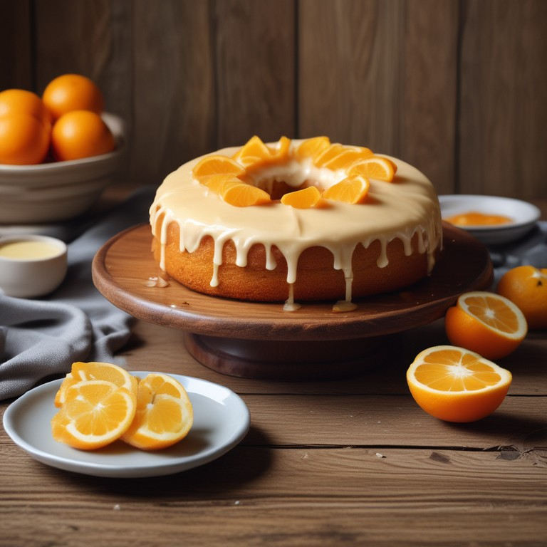

{% extends 'base.html' %}

{% block conteudo %}
    <section class="carrinho">
        <button  type="submit" ><a href="{{url_for('front_controller.carrinho')}}"></a></button>
    </section>
    
    <h1>Dulces: La Dulce Tentacion</h1> 
    <h4>En este sitio web encontrará:</h4>
    <hr>
    <section class="listaCulinaria">
        <ol type="I">
            <li>Recetas de dulces y postres.</li>
            <li>Fotos de las respectivas recetas.</li>
            <li>Dulces preparados si quieres comprarlos.</li> 
        </ol>
    </section>
    <ol type="I">
                <li><a href="{{url_for('front_controller.adicionarCarrinho')}}">Añadir un artículo al Carrito</a></li>
                <li><a href="{{url_for('front_controller.inserirReceita')}}">Introduce tu propia Receta</a></li>
                <li> <a href="{{url_for('front_controller.traduzir')}}">Traducir Recetas</a></li>
            </ol>

    <hr>

    <section class="centro">
        <form method="POST" action="{{url_for('front_controller.adicionarCarrinho')}}">
            
            <section class="receita">
                <h3>Receta – Pastel de Zanahoria:</h3>
                <h5>Ingredientes:</h5>
                <ul>
                    <li>3 huevos</li>
                    <li>1 taza de aceite</li>
                    <li>2 zanahorias medianas</li>
                    <li>1 taza de azúcar</li>
                    <li>2 tazas de harina de trigo (sin levadura)</li>
                    <li>una cucharada de levadura química</li>
                </ul>
            </section>
            

            
            <section class="receita">
                <ul>
                    <h3>Receta - Pastel de Chocolate:</h3>
                    <h5>Ingredientes:</h5>
                    <li>3 huevos</li>
                    <li>1/2 taza de aceite</li>
                    <li>1 taza de chocolate 50% o 1 y 1/2 de leche chocolatada</li>
                    <li>1 taza de azúcar</li>
                    <li>1 taza de agua caliente</li>
                    <li>2 tazas de harina de trigo (sin levadura)</li>
                    <li>una cucharada de levadura química</li>
                </ul>
            </section>
            

            <div>
                
                <h3>Receta - Pastel de Crema de Leche:</h3>
                <h5>Ingredientes p/ massa:</h5>
                <ul>
                    <li>3 huevos</li>
                    <li>1 taza de aceite</li>
                    <li>1 taza de leche</li>
                    <li>2 tazas de azúcar</li>
                    <li>3 tazas de harina de trigo (sin levadura)</li>
                    <li>1 cucharada de canela en polvo</li>
                    <li>una cucharada de levadura química</li>
                </ul>
                <h5>Ingredientes p/ relleno:</h5>
                <ul>
                    <li>Puedes comprar dulce de leche ya preparado si quieres y usarlo como relleno.</li>
                    <li>También puedes cocinar una lata de leche condensada (de aluminio) después de <br>aplicar presión durante 20 minutos, también se convierte en dulce de leche.</li>
                </ul>
            </div>

            
            <h3>Receta - Pastel de Naranja:</h3>
            <h5>Ingredientes masa:</h5>
            <ul>
                <li>4 huevos</li>
                <li>1 taza de aceite</li>
                <li>1 taza de leche</li>
                <li>2 tazas de azúcar</li>
                <li>2 tazas de harina de trigo (sin levadura)</li>
                <li>Jugo de dos naranjas</li>
                <li>una cucharada de levadura química</li>
            </ul>


            
            <h3>Receta - Pastel de Leche Ninho:</h3>
            <h5>Ingredientes masa:</h5>
            <ul>
                <li>3 huevos</li>
                <li>1 taza de aceite</li>
                <li>1 taza de leche</li>
                <li>2 tazas de azúcar</li>
                <li>3 tazas de harina de trigo (sin levadura)</li>
                <li>una cucharada de levadura química</li>
            </ul>
            <h5>Ingredientes p/ relleno:</h5>
            <ul>
                <li>1 y ½ tazas de leche Ninho en polvo</li>
                <li>1 lata de leche condensada fría</li>
                <li>1 caja de crema fría</li>
                <li>0 g de mantequilla sin sal</li>
            </ul>

            
            <h3>Receta - Pastel de Limón:</h3>
            <h5>Ingredientes:</h5>
            <ul>
                <li>4 huevos</li>
                <li>1/2 taza de aceite</li>
                <li>2 tazas de azúcar, no demasiado llenas</li> 
                <li>1 vaso de leche</li>
                <li>1 caja de gelatina de limón</li>
                <li>2 tazas de harina de trigo</li>
                <li>1 cucharada de polvo de hornear</li>


            
            <h3>Receta - Pastel de Fresa:</h3>
            <h5>Ingredientes:</h5>
            <ul>
                <li>1 taza (té) de agua</li>
                <li> taza (té) de Nesquick®</li>1
                <li>4 cucharadas de mantequilla</li>
                <li>3 huevos</li>
                <li>1 y 1/2 tazas (té) de azúcar</li> 
                <li>>3 tazas (té) de harina de trigo</li
                <li>1 cucharada de polvo químico para hornear</li>
            </ul>


            
            <h3>Receta - Pastel de Pistacho:</h3>
            <h5>Ingredientes :</h5>
            <ul>
                <li>4 huevos</li>
                <li>2 tazas de azúcar refinada</li>
                <li>1 taza (té) de aceite</li>
                <li>1 taza (té) de Leche Líquida</li>
                <li>30 g de pistachos triturados</li>
                <li>2 tazas (té) de harina de trigo</li>
                <li>1 cucharada de polvo químico para hornear</li>
            </ul>


            
            <h3>Receita - Brownie Tradicional</h3>
            <h5>Ingredientes:</h5>
            <ul>
                <li>4 huevos</li>
                <li>1 taza de azúcar</li>
                <li>250 g de margarina o mantequilla a temperatura ambiente</li>
                <li>2 tazas de chocolate en polvo o chocolate 50% cacao</li>
                <li>2 tazas de harina de trigo</li>
            </ul>


            
            <h3>Receta - Brownie con relleno de Chocolate</h3>
            <h5>Ingredientes masa:</h5>
            <ul>
                <li>4 huevos</li>
                <li>1 taza de azúcar</li>
                <li>250 g de margarina o mantequilla a temperatura ambiente</li>
                <li>2 tazas de chocolate en polvo o chocolate 50% cacao</li>
                <li>2 tazas de harina de trigo</li>
            </ul>
            <h5>Ingredientes p/ relleno:</h5>
            <ul>
                <li><1 caja de leche condensada (cuanto mayor sea el contenido de grasa, mejor)/li>
                <li>1 caja de nata (cuanto mayor sea el contenido de grasa, mejor)</li>
                <li>1 cucharada de mantequilla o margarina</li>
                <li>3 cucharadas de chocolate 100%</li>
            </ul>


            
            <h3>Receta - Brownie con relleno de Kinder</h3>
            <h5>Ingredientes p/ massa:</h5>
            <ul>
                <li>4 huevos</li>
                <li>1 taza de azúcar</li>
                <li>250 g de margarina o mantequilla a temperatura ambiente</li>
                <li>2 tazas de chocolate en polvo o chocolate 50% cacao</li>
                <li>2 tazas de harina de trigo</li>
            </ul>
            <h5>Ingredientes p/ relleno:</h5>
            <ul>
                <li>1 caja pequeña de crema</li>
                <li>1 ½ caja pequeña de leche condensada (usar siempre de buena calidad)</li>
                <li>1 cucharada colmada de mantequilla o margarina</li>
                <li>125 gramos de chocolate blanco</li>
                <li>1 cucharada de leche en polvo</li>
                <li>1 cucharadita de esencia de vainilla</li>
                <li>125 g de chocolate con leche (o semidulce, al gusto)</li>
                <li>140 g de crema de avellanas</li>
                <li>200 g de nata montada bien fría</li>
                <li>1 cucharada de chocolate en polvo</li>
            </ul>


        <br><br><br>

        <h2>Tus Recetas!</h2>

        {% if receitas %}
            <form>
                <ul>
                    {% for i in receitas %}
                        
                        <h3>{{i['nomeReceita']}}</h3>
                        {% for i in i['ingredientes'] %}
                            <li>{{i}}</li>
                        {% endfor %}
                        <br><br>
                    {% endfor %}
                </ul>
            </form>
        {% endif %}
        </form>
    </section>
{% endblock conteudo %}